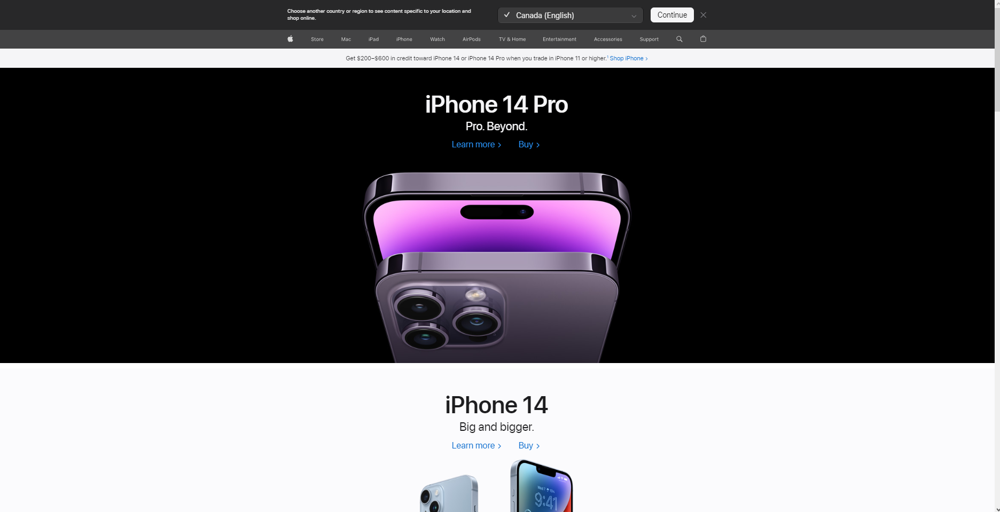
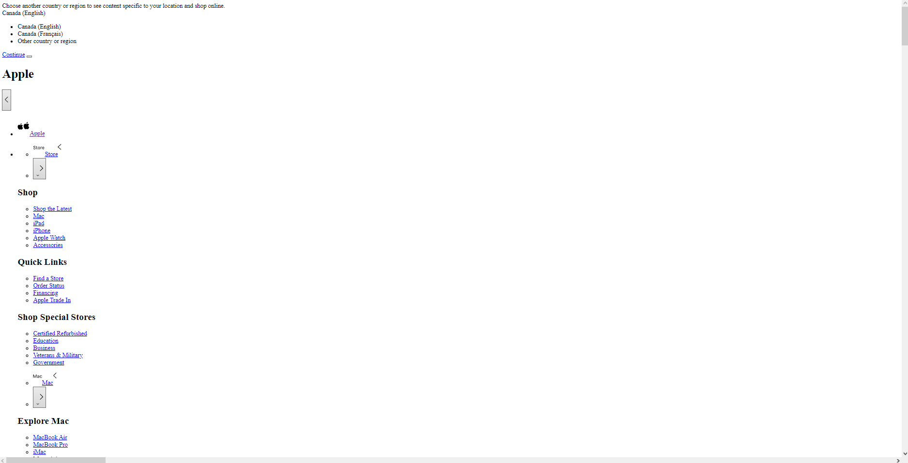

Assignment 4: Part 3 - Working with CSS
By: Edward Nafornita (110076381)
This is a snippet of the Apple website before I removed all of the CSS from the HTML.

This is a snippet of the Apple website after I removed all of the CSS.

Some more notable changes after the deletion of the CSS links in the head element on Apple's website is that
the website now has a lot of broken links especially with the navigation bar and various images which contained
links to other pages. Additionally, the website's main landing page contained nicely structure images which spanned
horizontally across the page, after the removal of the CSS those images are not present anymore. Also, all of the links
to the other section of the website are now in an unordered list format rather than a nicely formatted navigation bar.
Centering is also non-existent now as any formatting of text/images/other div elements were done through the CSS.